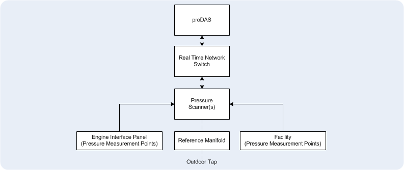
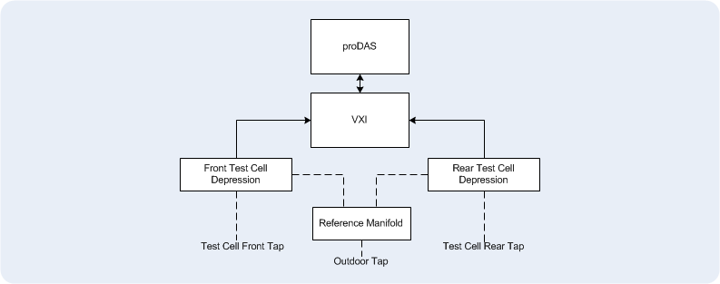

The Pneumatic Pressure Measurement system measures engine and test facility pressures. The system can consist of a variety of pressure scanners, scanner distribution boxes, and network switches. Tubes from various points on the engine, engine adapter and facility are connected to the pressure scanners that measure and convert pressures into engineering unit signals. The pressure values are sent to proDAS on the real time Ethernet network.
The system interface is the Pressure Scanner Functions Panel on the proDAS Management GUI Computer.
Typical pressures are:

